Why did it fail?
One click on a run and the AI explains it in plain words — which condition held, which step broke and how to fix it.
FLODE shows Home Assistant automations and scripts as a flow you can read, test and understand — edited with Home Assistant's own editors, saved as plain Home Assistant YAML. No server, no lock-in.
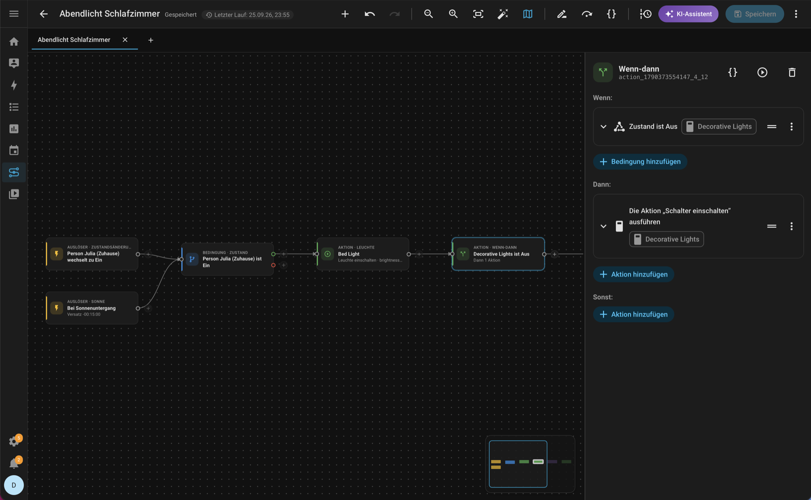
Made of Home Assistant
Every trigger, condition and action opens in Home Assistant's own editor — the same forms, pickers and dialogs as in Settings. FLODE adds the canvas, so you see how it all connects.
Adding steps, renaming, area, labels, mode, saving — all Home Assistant's own. If-then, Choose and Repeat stay single blocks.
FLODE follows your Home Assistant profile, light or dark, on desktop and phone.
Open any existing automation, change it visually, save it back. It stays editable in Home Assistant's own editor.
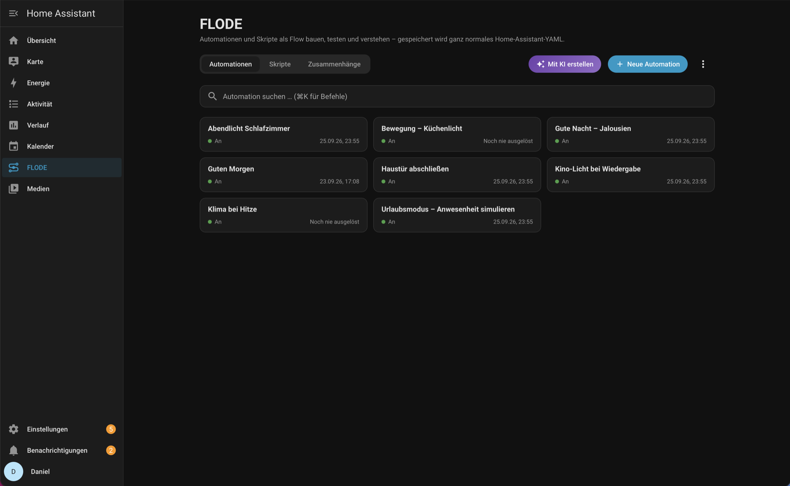
Runs & relations
Real runs are drawn right onto the flow, next to Home Assistant's own timeline. And one view shows how all your automations and scripts affect each other.
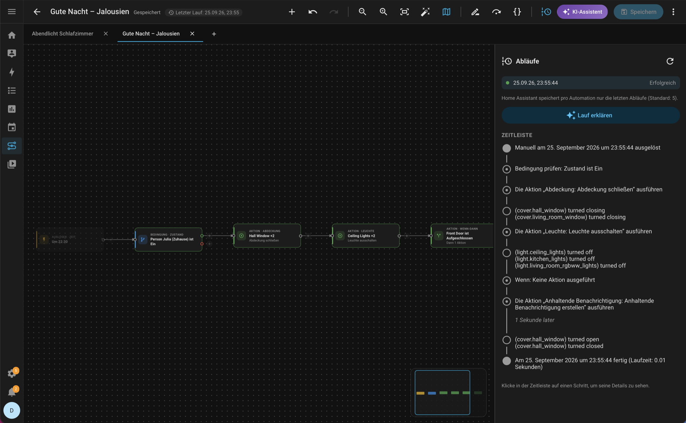
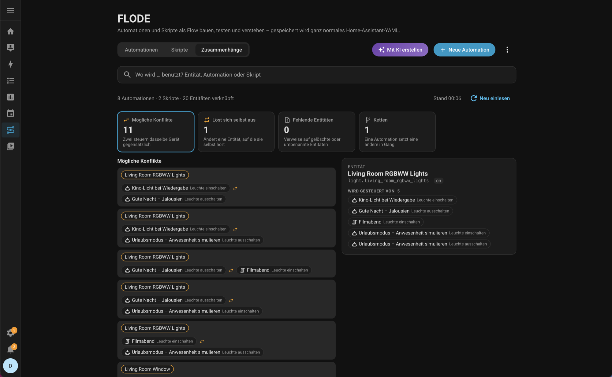
AI help
FLODE can use the AI you've set up in Home Assistant to explain runs, find mistakes and draft new automations.
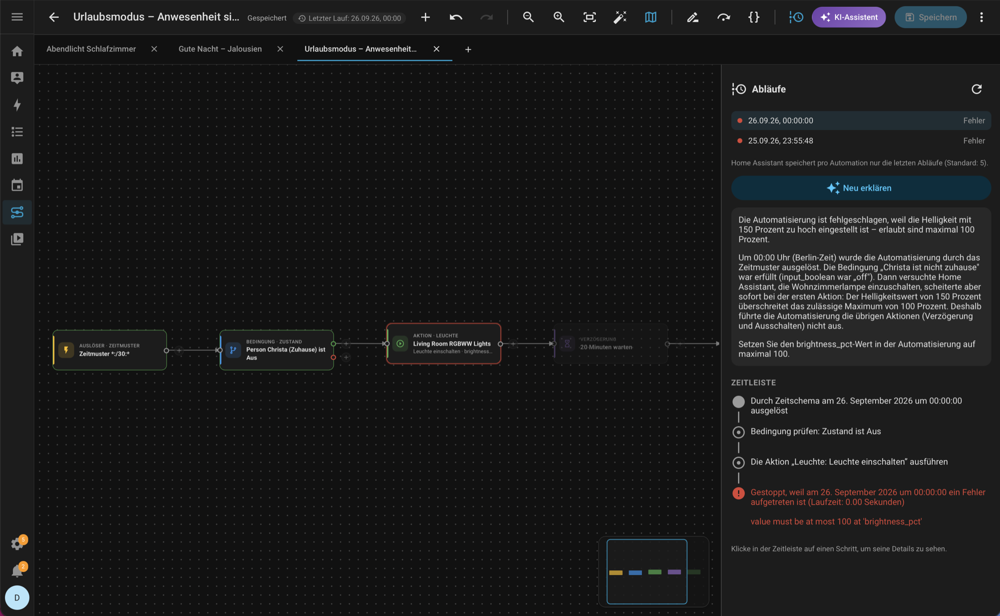
One click on a run and the AI explains it in plain words — which condition held, which step broke and how to fix it.
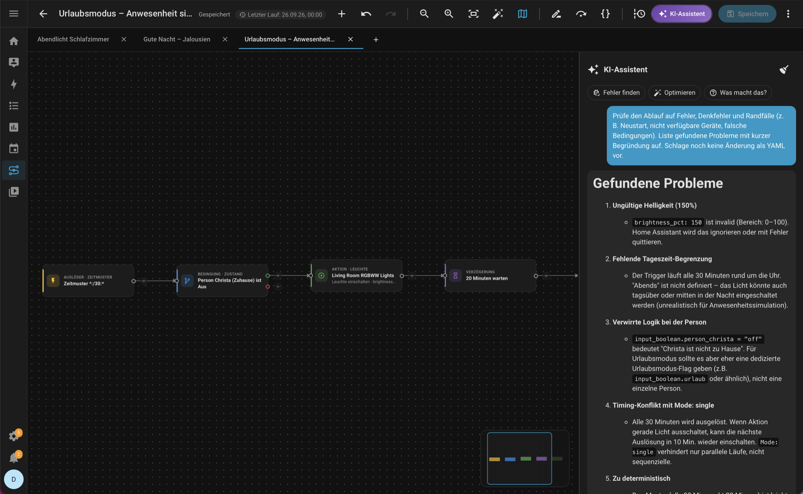
Ask about the open flow, let it find mistakes or suggest a better version. Changes are shown first and applied as one step you can undo.
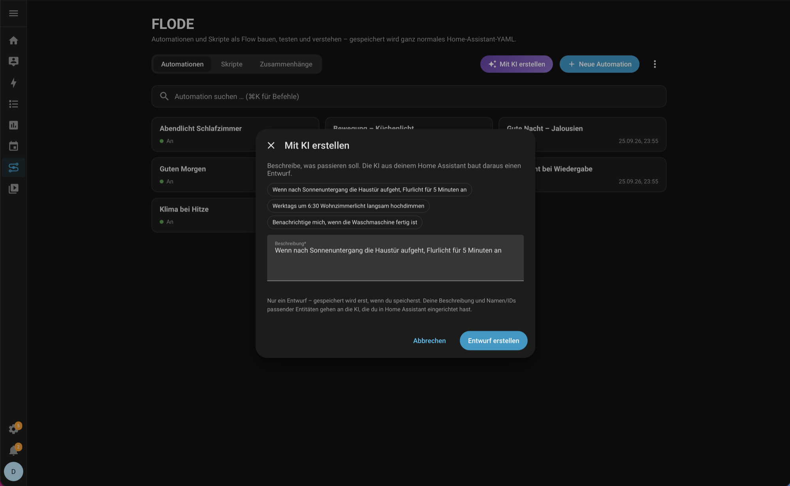
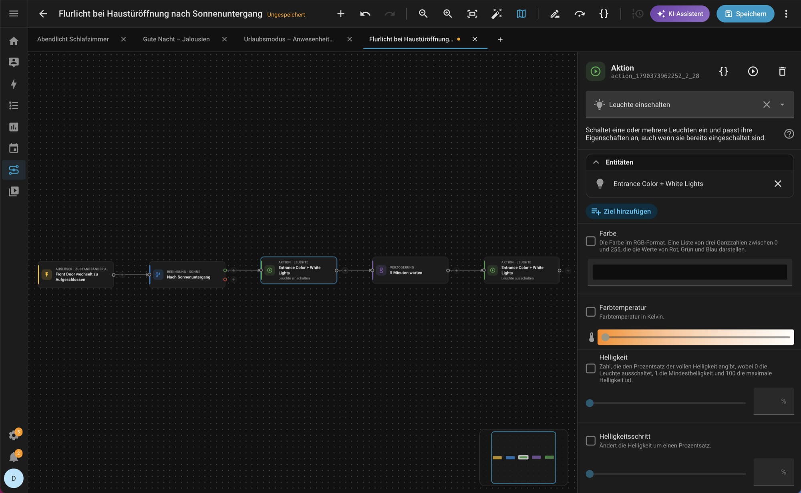
Describe what should happen. FLODE builds a draft from your real entities, checks it — and nothing is saved until you save.
Everything else
With fields, a run button that asks for them, and Run from here for any step.
Jinja rendered live by Home Assistant — with the result type, what it reacts to and the variables of a real run. ⌘J
Everything in one search ⌘K, right-click menus, copy, paste, duplicate, and an overview on ?.
Several flows open at once, each with its own undo; a minimap for big ones; tidy up in one click.
Paste YAML, save as copy, FLODE files, and merge several automations into one.
Warns when it can't read part of an automation. HA blocks stay blocks, and saving keeps what Home Assistant wrote.
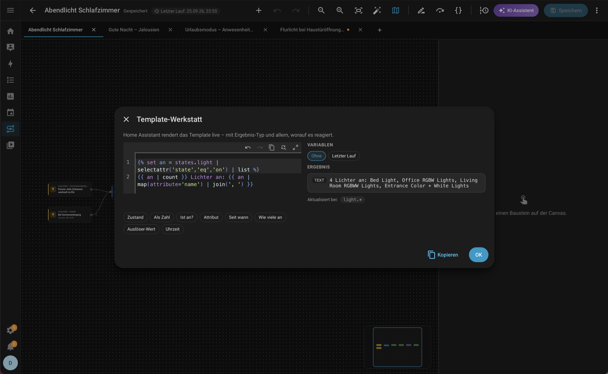
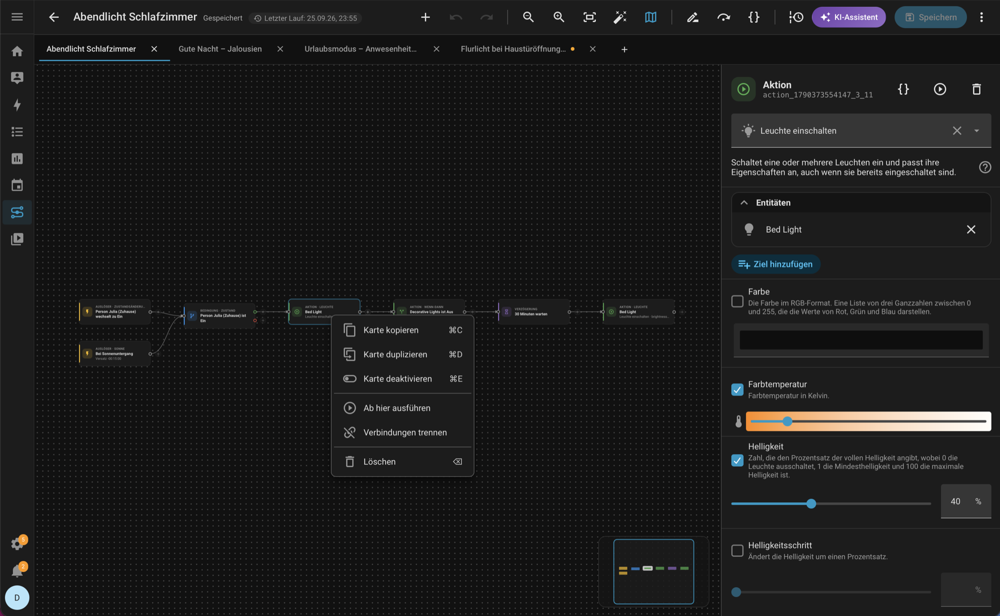
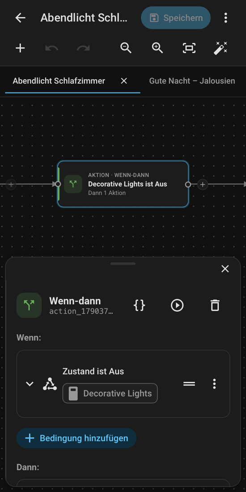
On the go
On a phone the tools move into a swipeable strip and the editor slides up as a sheet — the card you're editing stays in view above it.
Under the hood
What you build is ordinary Home Assistant YAML, stored by Home Assistant. Uninstall FLODE tomorrow and every automation keeps working.
alias: Abendlicht Schlafzimmer triggers: - trigger: sun event: sunset offset: "-00:15:00" conditions: - condition: state entity_id: input_boolean.person_julia state: "on" actions: - action: light.turn_on target: entity_id: light.bed_light data: brightness_pct: 40 - if: - condition: state entity_id: switch.decorative_lights state: "off" then: - action: switch.turn_on target: entity_id: switch.decorative_lights mode: restart
Install
Needs Home Assistant 2026.3 or newer and an admin account. By hand: copy flode.zip from the releases into config/custom_components/flode/.